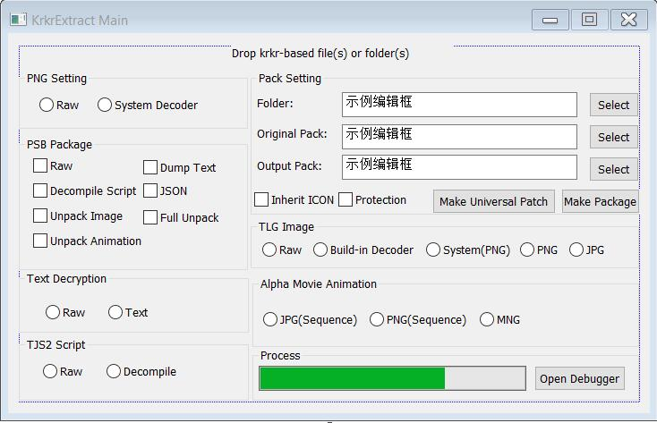

A Tool can extract xp3 files and repack them.
Main Functions
KrkrExtract can help you extract files from xp3 packages or repack files into a xp3 package, as well as make a universal patch.



About Unpack
(1)Make sure "KrkrExtract.exe" and "KrkrExtract.dll" are in your game directory.
(2)Drag the executable file of the current game into "KrkrExtract.exe".
(3)Drag a xp3 file into the window, KrkrExtract will extract it.
Some Special options:
(1)PNG Setting:
Raw: Do nothing.
System Decoder: Try to use build-in plugins then extract. If raw data seems corrupted, please try this way. NOT 100% STABLE.(eg: 恋がさくころ桜どき)
(2)PSB File:
Raw: Do nothing.
Decompile Script: Decompile the binary data into a tjs script.
Unpack Image: Try to unpack images in the PSB package.
Unpack Animation: Try to unpack images(eg:emote) in PSB package.
Dump Text: only extract essential texts for translation.
JSON: also decompile the binary data, but in JSON format.(this option will help you use the JIT Compiler)
Full Unpack: Do all processes.
(3)Text Decryption:
Raw: Do nothing.
Text: Try to use kirikiri's standard decryption.
(4)TLG Image:
Raw:Do nothing.
Build-in Decoder: Use build-in decoder, save images as 32bit bmp files.
System: Try to use build-in plugins then extract(save as png format). If the tlg files are using unknown format, please try this way. NOT 100% STABLE.
PNG: Use build-in decoder, save images as png format.
JPG: Use build-in decoder, save images as jpg format.
(5)TJS2 Script:
Raw: Do nothing.
Decompile: Try to decompile current script file.
(6)Alpha Movie Animation:(amv file)
JPG(Sequence): Use build-in decoder, save as jpg sequence.
PNG(Sequence): Use build-in decoder, save as png sequence.
MNG: Use build-in decoder, convert into mng format.
About Repack
This technology will help you translate or modify the game.
(1)Folder: Select a folder to pack. All sub-folders in this folder will be ignored.(You can drag a folder into the window)
(2)Original Pack: Select an original xp3 package from target game. In usual, KrkrExtract will select a package automatically.
(3)Output Pack: Input file name for your new package.( Create it if not exists)
(4)Make Package: Try to make a xp3 package.
About Universal Patch
Extra Information
More information about KrkrExtract
2017.5
KrkrExtract SDK
KrkrExtract SDK allow you to write a file system for your patch. The SDK provides a tiny file system to you.
 杏铃喵
杏铃喵
2017.5
Extra Tools
You can find some useful tools here. Most of them are developed for translation.
杏铃喵